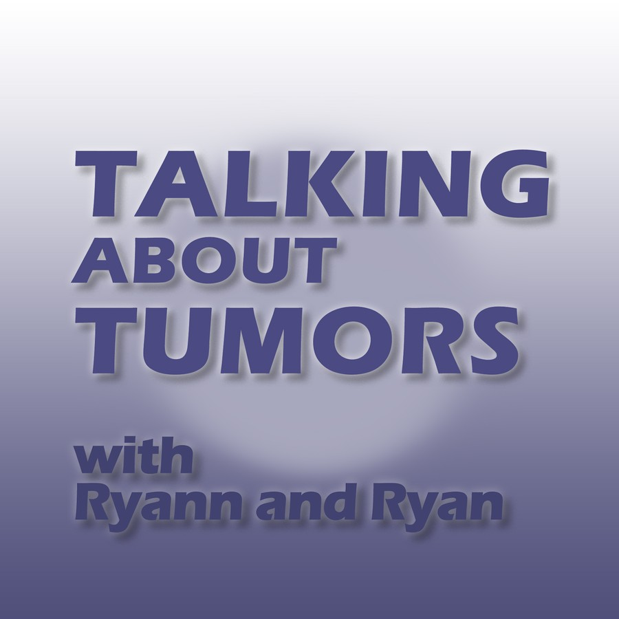

GI Malignancies
Colon, gastroesophageal, pancreatic, biliary, rectal, anal, ampullary, and related GI oncology topics.
15 episode notes loaded
Open chapter Talking About Tumors
Talking About Tumors
A medical oncology podcast
Designed for residents and fellows, this podcast provides an overview of the clinical practice and evidence behind management of individual tumor sites.

Episode archive
Each chapter page groups episodes by the podcast’s disease-site curriculum. Episode cards include audio players, collapsible show notes, and references with DOI hyperlinks.
Colon, gastroesophageal, pancreatic, biliary, rectal, anal, ampullary, and related GI oncology topics.
15 episode notes loaded
Open chapterEarly breast cancer, endocrine therapy, HER2-positive disease, triple-negative breast cancer, hereditary risk, and metastatic management.
10 episode notes loaded
Open chapterImmune checkpoint inhibitors, melanoma, lung cancer, mesothelioma, and head and neck malignancies.
13 episode notes loaded
Open chapterProstate, bladder, urothelial, renal cell, and testicular cancer topics.
10 episode notes loaded
Open chapterHepatocellular carcinoma, neuroendocrine tumors, glioblastoma, interviews, and ongoing topics.
2 episode notes loaded
Open chapterHosts
Medical oncologist and Assistant Professor of Medicine, UMass Chan Medical School
Ryan practices in Worcester, Massachusetts. His clinical practice is in GI, hepatobiliary, and thoracic malignancies. He is interested in medical education and the role of large language models in patient communication.
Hematology/oncology provider and Assistant Professor of Medicine, UMass Chan Medical School
Ryann practices in Worcester, Massachusetts. Her clinical practice focuses on breast cancer management. She is interested in medical education.
Listen, subscribe, or connect
Subscribe through your preferred podcast platform, listen through Buzzsprout, suggest a topic, or invite a host to speak.